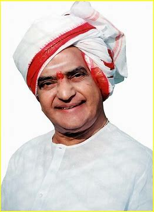

Nandamuri Taraka Rama Rao
He was a legendary Indian film actor and politician.

Nandamuri Taraka Rama Rao (28 May 1923 – 18 January 1996),[1] often referred to by his initials NTR, was an Indian actor, filmmaker and politician who served as Chief Minister of Andhra Pradesh for seven years over three terms.
Few lines about Nandamuri Taraka Rama Rao
- Nandamuri Taraka Rama Rao (28 May 1923 - 18 January 1996),[1] often referred to by his initials NTR, was an Indian actor, filmmaker and politician who served as Chief Minister of Andhra Pradesh for seven years over three terms..
- Nandamuri Taraka Rama Rao was born in a Hindu agrarian family on 28 May 1923 in Nimmakuru, a small village in Gudivada taluk of Krishna district, which was a part of the erstwhile Madras Presidency of British India.
- He was given in adoption to his paternal uncle because his uncle and aunt were childless.
- He was first educated by a teacher who came from a nearby village, whom he would attribute his command of Telugu to, as well as his father, an aspiring thespian and patron of the arts
- In May 1943, at the age of 20, while still pursuing his Intermediate, Rao was married to Smt. Basava Rama Tarakam, the daughter of his maternal uncle
- In 1947, he joined the Madras Service Commission as a sub-registrar at Prathipadu of Guntur district, a much-coveted job that he nevertheless quit within three weeks to devote himself to acting.
- He starred in over 300 films, predominantly in Telugu cinema, and was referred by the media as Viswa Vikhyatha Nata Sarvabhouma (Universally-renowned star of acting).
- Rao was awarded the Padma Shri by the Government of India in 1968, recognizing his contribution to Indian cinema.
- After his career in films, Rao entered politics. He founded the Telugu Desam Party (TDP) in 1982 and served three tumultuous terms as Chief Minister of Andhra Pradesh between 1983 and 1995.
- At the national level, he was instrumental in the formation of the National Front, a coalition of non-Congress parties which governed India from 1989 until 1990.
First term as Chief Minister, 1983:
He used many innovative ways of campaigning, such as being the first politician in India to use rath yatras for campaigning.- during his campaign, a distinctive sight with the van's yellow party flags and banners and Rao sitting on top of the vehicle hailing the crowds.
- N T Rama Rao died of a heart attack on 18 January 1996 at his residence in Hyderabad, aged 72.[71] He was cremated and his ashes were immersed at Srirangapatna by his second wife Lakshmi Parvathi, eight years later, in May 2004.
Summary:
Nandamuri Taraka Rama Rao was an Indian actor, filmmaker and politician.
„What is destined to happen will happen. Victory and defeat are like light and darkness.“ Source: https://quotepark.com/quotes/1749164-n-t-rama-rao-what-is-destined-to-happen-will-happen-victory-an/
— N. T. Rama Rao